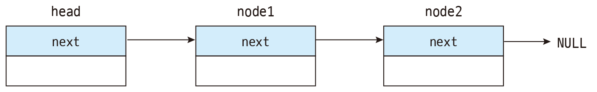

연결리스트는 구조체나 클래스로 생성된 각 노드가 데이터와 포인터를 포함하며
각 노드의 포인터가 다음 노드를 가리키는 형식으로 연결되어 있는 형식의 자료구조이다.

각 원소가 기억 장소 내의 어떤 곳에나 위치할 수 있다는 특징 덕분에, 중간지점에서의 추가와 삭제가 O(1)의 시간에 가능하다.
다만 검색에는 불리한데, 맨 처음 노드부터 하나씩 검색해야 하므로 O(n)의 시간이 걸린다.